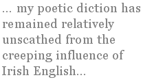

Quincy R. Lehr
From TIME ZONES
II
Widen the angle, change the basic plot
From a comedy by Cheech and Chong
To something else — a tragedy? I doubt it,
But this is my life. There’s no two ways about it,
Though not an action flick (it’s far too long),
There’s been a little bit of incident,
High drama, perhaps, the odd soliloquy,
The Rocky story (maybe just a hint —
I’m Ivy League, a hetero, and white;
“Against the odds” just doesn’t sound quite right).
But still, it’s unexpected. How I swore
I wouldn’t teach like Dad! I’d play guitar,
Write songs, and form a band to tour the globe.
Cool as crap and backlit with a strobe,
Cult following, too weird to be a star.
I’d rock your fucking world, man! Could’ve happened…
Well, maybe, maybe not. That was the dream.
It’s not as if I wrote it off as crap and
Got a daytime job. The truth’s more subtle —
I could have handled work at Pizza Shuttle,
With gigs on Fridays, practice on the weekend,
A rented room near the university
In my home town. I’ve known my share of squalor,
Anyway. Bohemian, white-collar,
In college for ten years — the Ph.D.
Reached me in my apartment in the Heights
(Washington that is), sweating through
A record heat wave, waking up most nights
To shouts in Spanish or sounds of breaking glass.
Welcome to the lumpen middle class.
But as I caught the train from the convocation,
Looking like Martin Luther in my hood
And robe and hat, the tail end of a phrase
Of music that I wrote in younger days —
D minor, heavy, slow, and fairly good —
Came back to me. I hadn’t played the thing
(The song, not the guitar) in many years.
When I got home and played, the upper string,
Green with age, snapped off, and then the second.
I haven’t replaced them since. No tunes have beckoned —
But was I stymied? Did I chicken out?
Or did I change, for better or for worse?
Was I seduced by serpents in the garden,
Or did I just accept I’ve got no part in
The pivotal scenes — unmentioned in the verse?
A cosmic extra on the ground in Babel,
I barely saw the tower scraping heaven.
“Give us Barabbas!” I’m shouting with the rabble,
And while the shepherds shuffle to the stable,
I’m on the couch next door and watching cable.
Uno momento, dude! We’ve all had dreams,
Mutually exclusive, and we choose.
Some friends of mine still play in bands today.
Some stayed in school like me. Some found their way
To squalid epiphanies in drugs and booze,
And some have children now. But then there’s me,
Hither and yonder, shuttling through the time zones,
My rooms still rented, with an advanced degree
Not even framed yet, not quite one of those
Settled down into a place he “chose.”
The trade-off’s typical, the core dilemma
A classic one — in leaving one’s hometown,
One’s centre’s elsewhere. What’s periphery
For those who stay to raise a family
Or whatthefuckever you do when settling down
Becomes the site of basic interaction
When prodigal through chance or conscious choice.
I’ll be the last to sneer at the attraction.
Although I’m not a genius like Jimi Hendrix,
And just can’t see myself tricked out in spandex,
Ambition still won’t let me sleep sometimes.
Like an idiot howling for our notice,
A lovechild of the id and super-ego
That seems to follow us wherever we go,
Its schemes to thrust us forward and promote us
Are often mere reflex, heedless of direction,
Devoid of planning. Still, despite the gambits,
Stratagems, and lack of introspection,
The end result turns out to be regret
At not quite settling for what we can get.
What’s not a gambit, though, if we’re being honest?
The pipes might freeze. The car might be a lemon.
The children might turn criminal or whore.
The steady job might move to Bangalore.
A husband’s eyes can stray to other women.
I could go on, but I think you get the drift.
We’re betting on a game we can’t quite play.
I wonder if the “safe move” gets short shrift,
But half expect it doesn’t quite exist
In the poker face or a movement of the wrist.
But now I’m staring from my office window,
Listening to sounds in the corridor,
Voices I seem to recognize, that mingle
Into a sort of song, a tuneless jingle,
Percussive rain outside. I can’t ignore
The symmetry of sound that still occurs
To me. Despite my swearing off ambitions
Of lasting fame, the subtle rhythm stirs
A hint of something larger than the rain
Behind my eardrum, racing through my brain.
On Not Being an Irish Poet
One of the myths the Irish have about themselves, repeated often and seemingly confirmed by the periodic wunderkinds that emerge from this island, is that they somehow have the jump on the rest of the world where poetry is concerned. Since moving here in the fall of 2006, I have, on occasion, when in poetry circles, gotten that look that somehow manages to say, “Oh another returned Yank hoping for a mystical connection with the ‘Auld Sod’ and W. B. Yeats and Kavanagh and all the rest of ’em.” It’s strange how a look can say all that, but, with a few beers down and sufficient disapproval, it can.
But... I’m not an Irish-American, and it certainly isn’t a conscious goal of mine to become an “Irish Poet” (cue shuddering). Hell, most of the Irish poets I know aren’t all that into being “Irish Poets.” (Indeed, the most self-consciously “Irish” poet I know here comes from just outside Liverpool [note to American readers — that’s the place in England the Beatles are from] and has the accent to match.) Sure, you do hear the occasional guy at a poetry reading (generally one of the crap ones) going on about the Little People under the Hollow Hill with the Pot of Gold that the Avaricious Culchie Gobshite tries to feck off them, but most Irish people hate that shit as much as you do, dear reader. No, the culture worms its way into the expat’s language and poetry through subtler means. I’ll use myself as an example — hey, because it’s easy.
Well, in the first place, there are the words and phrases. I don’t mean that you lose your accent, but rather that where words differ, one starts to use the local term. I say “parking lot” about half the time, “car park” the other half. My “comforter” has, over the course of the year, morphed into a “duvet” without changing any of its physical characteristics. And “biro” has the advantage of one less syllable than “ballpoint pen.” That the Oklahoma accent treats “pen” and “pin” as homonyms, and given that the person behind the counter of the convenience stores at which I buy said biros is often an immigrant for whom English (Irish version) is a second language, the switch makes even more sense. I’ll probably never say “half-eleven” for “eleven-thirty,” though.
And then there are the periodic specifically Irish or (don’t tell the Irish this) Brittano-Hibernian phrases. “Craic” (pronounced like “crack” as in crack cocaine) is a useful word, meaning anything from “things” (as in “How’s craic?”) to getting plastered with your buddies at the pub. “Shite,” which is like “shit” only more emphatic, is useful as well, and can be combined into nice little phrases like “shitehawk” and “gobshite.” And, of course, there’s “feck,” which I hardly ever use in the presence of Irish people, but which is useful as an alternative to “fuck” when talking to my mother on the phone.
On the whole, aside from setting my spell check to “English — Ireland”
Sometimes, it’s slang. Not too long ago, I bumped into a guy at the pub who’d spent some time in the Oklahoma City area back in the 1980s — my own place of origin. He’d had a few drinks, as he told the tale, and was staggering to where he was staying a ways up Western Avenue. The cops saw him swerving along and asked him why he was walking rather than driving. “I’m pissed,” he said.
“Why are you pissed?” the cops asked in return.
“Because I’ve been drinking.”
“Why would that make you angry?”
Now, I can switch-hit, as it were, between using “pissed” to mean “drunk” and to mean “angry,” but there are subtler differences in speech as well, in inflection and emphasis, as well as in the words used themselves, and even as the vocabulary gets more familiar (and it’s really overwhelmingly shared anyway), the ways that Irish English shades its meanings are still, at times, a bit of a foreign language which I’ve managed to pick up after a year of total immersion.
And the poetic traditions are also subtly different. Have you ever tried hunting down a copy of Zukofsky’s A in a Dublin book shop? It’s about as easy to find as the latest Ciaran Carson is in, say, Kansas City. And while, yes, one can find a book by Walt Whitman on the shelves of Eason’s as easily as Heaney’s selected at an American Barnes and Noble, I certainly never memorised Yeats’s “The Lake Isle of Innisfree” in high school, whereas anecdotal evidence indicates that it’s more or less required here. And on the other hand, Frost’s “The Road Less Traveled,” a staple of American poetry education, is not nearly as well-known. And we definitely did not do Gerard Manley Hopkins in high school in the States.
It isn’t as if the traditions are hugely apart from one another. A poetically literate Irish person has frequently read much of what his or her American equivalent has. It’s more a matter of what is at the centre and periphery of each one’s poetic consciousness.1 And while I’ve read more Irish poetry since coming here (if nothing else, the “Irish Poetry” sections in bookstores tend to be easier to locate than the “Poetry” sections), it has not — nor will it ever — make me into an “Irish Poet” any more than reading a bunch of Thomas Hardy or Simon Armitage or whomever will make me into an “English Poet.” We tend to borrow poetry stuff from other poets, not nationality stuff. While the “Irish” bag of tricks (in terms of what’s fashionable, what kind of poetry gets written, and so forth) varies from the “American,” it is nonetheless not reducible to nationality.
But I like to think that, somehow, I do bring something a bit different to the mix over here, and I can say that a sustained encounter of poetry in an English that isn’t quite the English I grew up speaking has made me more aware of the distinctiveness of my own voice. So, while I’ll never be an Irish Poet, and while I’m not losing any sleep over that, there are worse things to be than a poet in Ireland. And, hell, I’ve even developed something of a taste for black pudding with brown sauce.
- I’m talking about poetry in English here. “Failte” and “slainte” more or less exhausts my knowledge of the Irish language — and the same goes for many Irish people. There is a tradition of Irish poetry in the Irish language, and if I don’t comment on it, it’s not intended as disrespect. I really just know jackshit about it.
Quincy R. Lehr was born and raised in Oklahoma, and, via Austin Texas, New York City, and Dublin, currently resides in Galway, Ireland. His first book, The Perfect Joke, will be published in 2008 by Seven Towers (and will include the whole of “Time Zones”) .
|